In the first half of the nineteenth century it was generally believed that reactions of organic compounds proceeded with minimal structural change. This tenet simplified the elucidation of the numerous substitution, addition and elimination reactions that characterized the behavior of common functional groups. However, subsequent discoveries showed that nature was not always so obliging, leaving chemists and chemistry students to grapple with the possibility of deep seated structural change occurring during certain reactions. A large number of these structural rearrangements are triggered by intermediates incorporating positively charged or electron deficient atoms, which in the case of carbon are carbocations. Two such examples, already noted, are the addition of HCl to 3,3-dimethyl-1-butene and forced hydrolysis of neopentyl bromide. This chapter will describe and discuss other cases of this intriguing group of transformations.
The chemical behavior of neopentyl bromide, 2,2-dimethyl-1-bromopropane, is an instructive place to begin this discussion. The very low SN2 reactivity of this 1º-bromide was noted earlier, and explained by steric hindrance to the required 180º alignment of reacting orbitals. Under conditions that favor SN1 reactivity, such as solution in wet formic acid, neopentyl bromide reacts at roughly the same rate as ethyl bromide. Both of these compounds are 1º-alkyl halides, and for an SN1 reaction the rate determining step requires ionization to a 1º-carbocation. As noted in the carbocation stability order shown below, such carbocations are relatively unstable and are formed slowly. The product from ethyl bromide is ethanol, the simple and direct substitution product, but neopentyl bromide yields 2-methyl-2-butanol instead of the expected neopentyl alcohol. A change in the way the five carbon atoms in this product are bonded to each other has clearly taken place.
Once formed, the ethyl cation can only be transformed by a substitution or elimination process. In the case of the neopentyl cation, however, the initially formed 1º-carbocation may be converted to a more stable 3º-carbocation by the 1,2-shift of an adjacent methyl group with its bonding electrons. A mechanism demonstrating such a rearrangement is shown below, and it explains the overall structural changes very nicely.
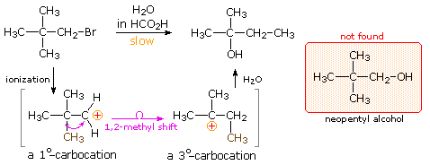
Increasing the stability of carbocation intermediates is not the only factor that leads to molecular rearrangement. If angle strain , torsional strain or steric crowding in the reactant structure may is relieved by an alkyl or aryl shift to a carbocation site, such a rearrangement is commonly observed. The following examples illustrate rearrangements induced by the strain in a small ring. Although a 3º-carbocation is initially formed, the angle and torsional strain of the four-membered ring is reduced by a methylene group shift resulting in ring expansion to a 2º-carbocation. Clicking on the equation diagram will display a mechanism for these transformations.
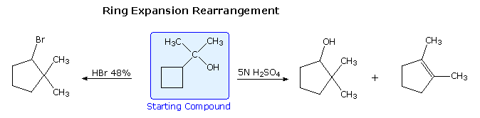
Following the ring expansion step other reactions may take place, depending on the conditions. In aqueous acid the rearranged 2º-carbocation may bond to a water nucleophile, producing a 2º-alcohol, lose a proton to water, giving 3,3-dimethylcyclopentene (not shown), or undergo a second rearrangement to a 3º-carbocation, which then forms 1,2-dimethylcyclopentene. Indeed, it is not uncommon to encounter sequences of rearrangements in more complex compounds, and these may produce products with structures remarkably different from that of the starting compound. The following equation shows one such reaction. A curved arrow representation of the five sequential ring expansion steps will be added to the equation by clicking on the diagram.
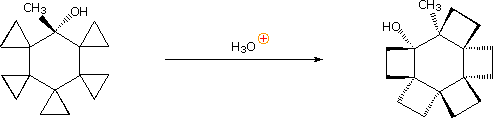
In the terminology of pericyclic reactions, 1,2-alkyl shifts of this kind are classified as [1,2]-sigmatropic shifts. Since this is a two-electron process (the 2 electrons in the relocated sigma bond), the rearrangement is predicted to be suprafacial. Considerable evidence supporting this conclusion has been obtained, as the following example shows. Protonation of the double bond gives a 3º-carbocation. An adjacent hydrogen atom (colored blue) shifts as a hydride moiety to create a new 3º-carbocation, which in turn induces the shift of a methyl group (colored green) with formation of yet another 3º-carbocation. This electrophilic center then bonds to the nucleophilic oxygen of the carboxylic acid function, releasing a catalytic proton to continue the process. Because of the fused polycyclic structure of this compound, the relative orientation of the migrating groups is easily determined, and is seen to be suprafacial. Rearrangements consisting of consecutive 1,2-shifts often take place in a concerted, and therefore stereospecific fashion; however, it must not be assumed that the group shifts are simultaneous. Each shift involves a separate transition state in which the positive charge is delocalized over the migration terminus, origin and migrating group.
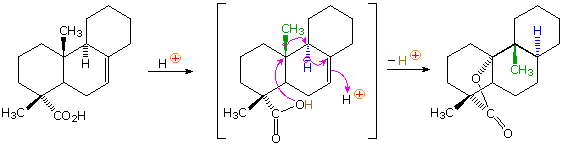
Many of the most interesting rearrangements of this kind were discovered during structural studies of naturally occurring compounds. Among these the terpenes presented numerous remarkable reactions, and the names of two chemists who were instrumental in unraveling their complex transformations, H. Meerwein and G. Wagner, are permanently associated with these rearrangements. The addition of gaseous HCl to α-pinene proved particularly puzzling to these early chemists. Under ordinary conditions, this liquid component of turpentine gave a crystalline C10H17Cl compound, originally called "artificial camphor", now known as bornyl chloride. An unstable isomer, pinene hydrochloride, can be isolated under mild conditions, but it rapidly isomerizes to bornyl chloride. Treatment of bornyl chloride with base gave a crystalline isomer of pinene called camphene, together with small amounts of another unsaturated hydrocarbon (bornylene). Addition of HCl to camphene, in a similar fashion, initially produces an unstable chloride (camphene hydrochloride) which quickly isomerizes to isobornyl chloride, a stereoisomer of bornyl chloride. We now know that bornyl chloride and isobornyl chloride are endo / exo-2-chloro isomers of the 1,7,7-trimethylbicyclo[2.2.1]bicycloheptane system. Structural formulas for these compounds are drawn below, along with camphene, the rearranged elimination product.
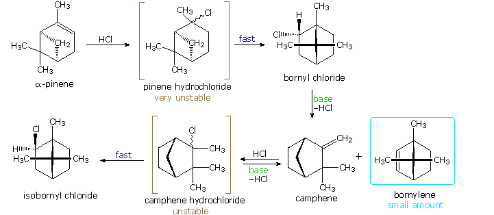
Mechanisms for these rearrangements will be pictured by clicking on the above diagram. In the new display we see that both pinene and camphene form 3º-carbocations when the double bond is protonated. Rearrangement to a 2º-carbocation is favored by relief of small-ring strain in the case of pinene, and relief of steric congestion in the case of camphene. However, this is an oversimplification which ignores the fact that these reactions take place in nonpolar solvents, and are unlikely to involve discrete, unassociated carbocations. Some of the stereoelectronic effects that influence these reactions will be shown by clicking on the above diagram a second time. Structures for the initially formed unstable hydrochlorides of pinene and camphene are drawn on the left. Optimal orbital overlap of breaking and forming bonds requires rear-side approach of the shifting alkyl group to the site of the leaving chloride anion, in a manner similar to a SN2 reaction. The chloride anion is located on one side of the carbocation formed by the alkyl shift, and immediately bonds to that face of the tricoordinate carbon. In this view of these rearrangements, the chloride anion never escapes the attractive influence of its cationic partner, and the product stereoselectivity is understandable. Lewis acid catalysts (e.g. FeCl3) catalyze these rearrangements, and the product favored at equilibrium is bornyl chloride. The rearrangement that occurs under base catalyzed elimination conditions reflects the eclipsed configuration of the two-carbon bridge bearing the chlorine atom. Because of this configuration, the anti-coplanar structure favored by the E2 transition state cannot be achieved. Syn elimination gives a small amount of bornylene, but rearrangement to a camphene precursor predominates. Repeated clicking on the above diagram will cycle the displays.
Yet another example of the remarkable acid-catalyzed rearrangements found to occur with terpenes was observed in a study of the sesquiterpene caryophyllene (from oil of cloves). Here it is evident that reactive sites may interact and form bonds from one side of a medium-sized ring to another side. The mechanisms for many such rearrangements have been, and still are studied with great interest.
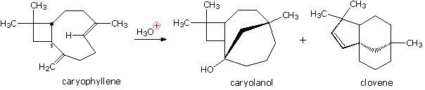
The pinacol rearrangement was the first molecular rearrangement identified as such by early chemists. The defining example of a pinacol rearrangement is shown in the following diagram. Pinacol itself is produced by magnesium reduction of acetone, probably by way of a ketyl intermediate. Since the diol is symmetrical, protonation and loss of water takes place with equal probability at either hydroxyl group. The resulting 3º-carbocation is relatively stable, and has been shown to return to pinacol by reaction in the presence of isotopically labeled water. A 1,2-methyl shift generates an even more stable carbocation in which the charge is delocalized by heteroatom resonance. Indeed, this new cation is simply the conjugate acid of the ketone pinacolone, which is the product of repeated rearrangements catalyzed by proton transfer. Each step in this rearrangement is potentially reversible, as demonstrated by the acid catalyzed dehydration of pinacolone (and pinacol) to 2,3-dimethyl-1,3-butadiene under vigorous conditions.
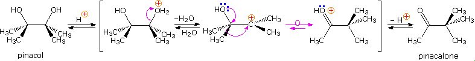
Many factors must be considered when analyzing the course of a pinacol rearrangement. These include:
• Which hydroxyl group is lost as water? or Which intermediate carbocation is more stable? • What is the inherent shifting tendency (migratory aptitude) of different substituent groups? • What is the influence of steric hindrance and other strain factors on the rearrangement? • Are epoxides formed as intermediates in the pinacol rearrangement? • Does product stability govern the outcome of competing rearrangements? • Do the reaction conditions (i.e. type of acid, concentration, solvent and temperature) influence the course of rearrangement?
Virtually all of these factors have been shown to be important in one or more cases, and a full analysis of their complex interaction is beyond the scope of this text. Nevertheless, a few examples will be presented to demonstrate the general nature of this transformation, and to illustrate the action of some of the above factors. In the first reaction shown below, we see an example of kinetic versus thermodynamic product control. Under mild acid treatment, the diol rearranges rapidly to an aldehyde by way of a 1,2-hydrogen shift to the initially formed diphenyl 3º-carbocation. More vigorous acid treatment of the diol or the aldehyde generates the more stable phenyl ketone (conjugation of the phenyl and carbonyl groups). Mechanisms for this and the other reactions will be presented by clicking on the diagram. A pink colored arrow designates rearrangement; light blue arrows indicate epoxide ring closing or opening reactions. Repeated clicking toggles the reaction and mechanism displays. The second example describes a similar reacting system, which provides additional information from stereochemical and isotopic labeling features. Loss of water from the 3º-carbinol site, followed by a reversible 1,2-hydride shift, generates the conjugate acid of the ketone product. At short reaction times, racemization of recovered diol starting material occurs at the same rate as rearrangement. A corresponding phenyl shift to the initially formed 3º-carbocation generates the aldehyde conjugate acid, and the aldehyde itself has been shown to isomerize to the same rearranged ketone under the conditions of this pinacol rearrangement. An isotopic carbon label (colored green) in either the diol or aldehyde is scrambled (colored brown) in the course of these reactions, suggesting an epoxide intermediate.
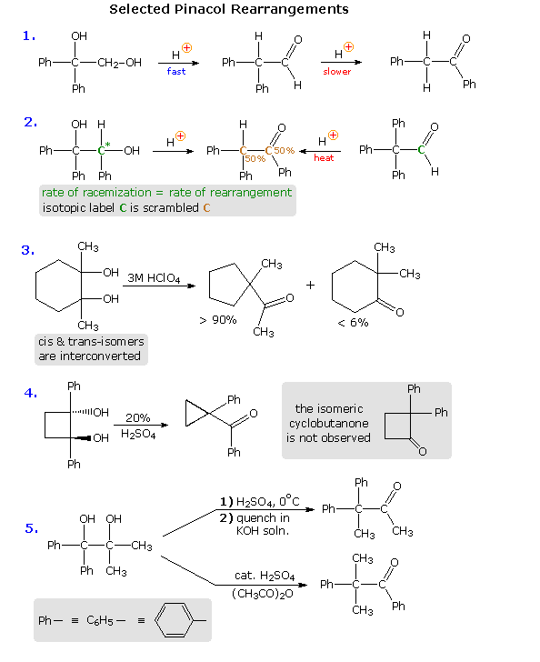
In reaction # 3 either the cis or trans diol may be used as a reactant. These isomers are rapidly interconverted under the rearrangement conditions, indicating that the initial water loss is reversible; a result confirmed by isotopic oxygen exchange. The clear preference for a methylene group shift versus a methyl group shift may reflect inherent migratory aptitudes, or possibly group configurations in the 3º-carbocation intermediate. In the conformation shown here both methyl and methylene groups may shift, or an epoxide ring may be formed reversibly. An alternative chair-like conformation having an equatorial methyl group should be more stable, but would not be suitable for a methyl shift. The predominant ring contraction is therefore understandable. Reaction # 4 is an unusual case in which a strained ring contracts to an even smaller ring. Phenyl groups generally have a high migratory aptitude, so the failure to obtain 2,2-diphenylcyclobutanone as a product might seem surprising. However, the carbocation resulting from a phenyl shift would be just as strained as its precursor; whereas the shift of a ring methylene group generates an unstrained cation stabilized by phenyl and oxygen substituents. Conjugative stabilization of the phenyl ketone and absence of sp2 hybridized carbon atoms in the small ring may also contribute to the stability of the observed product. Finally, reaction # 5 clearly shows the influence of reaction conditions on product composition, but explaining the manner in which different conditions perturb the outcome is challenging. Treatment with cold sulfuric acid should produce the more stable diphenyl 3º-carbocation, and a methyl group shift would then lead to the observed product. The action of a Lewis acid in acetic anhydride, on the other hand, may selectively acetylate the less hindered dimethyl carbinol. In this event the acetate becomes the favored leaving group (presumably coordinated with acid), followed by a 1,2-phenyl shift. It is reported that the symmetrically substituted isomeric diol (drawn in the shaded box) rearranges exclusively by a methyl shift, but the configuration of the starting material was not stated (two diastereomers are possible). Because of the influence of other factors (above), it has not been possible to determine an unambiguous migratory order for substituents in the pinacol rearrangement. However, some general trends are discernible. Benzopinacol, (C6H5)2C(OH)C(OH)(C6H5)2, undergoes rapid rearrangement to (C6H5)3CCOC6H5 under much milder conditions than required for pinacol. Indeed, it is often the case that phenyl or other aromatic substituents adjacent to a forming carbocation will facilitate that ionization in the course of their migration to the cationic site. In non-aromatic compounds of the type (CH3)2C(OH)C(OH)RCH3, migration of R increases in the manner R = CH3 < R = C2H5 << R = (CH3)3C. Since the shifting alkyl group must carry part of the overall positive charge, alkyl substitution should have a stabilizing influence on the rearrangement transition state. Finally, fluorine substitution, as in C6H5(CF3)C(OH)C(OH)(CF3)C6H5 renders the diol unreactive under acid catalyzed rearrangement conditions. Here, the powerful inductive withdrawal of electrons by fluorine inhibits positive charge formation.
Ambiguity in determining the initial site of carbocation formation presented a problem in the analysis of many pinacol rearrangements. This uncertainty can be removed by nitrous acid deamination of the corresponding 1º-aminoalcohols, as shown in the following equation. Since this reaction is normally carried out under very mild conditions, the possibility that subsequent transformations may obscure the initial rearrangement is reduced considerably.
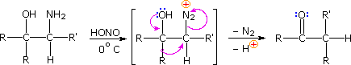
The Tiffeneau-Demjanov rearrangement is often used to transform a cyclic ketone into a homologue that is one ring size larger. Such an application, which proceeds by way of a cyanohydrin intermediate, is shown in the first example below. Cyclic ketones have two alpha-carbon atoms, each of which might shift to the nascent 1º-carbocation. If R = H in the case shown here, these two groups are identical and on shifting give the same product. If R = CH3, the 2º-alkyl group shifts preferentially, the chief product being 3-methylcyclohexanone; the 2-methyl isomer is a minor product. The second reaction is informative because it demonstrates that the chiral 2º-butyl group moves with retention of configuration.
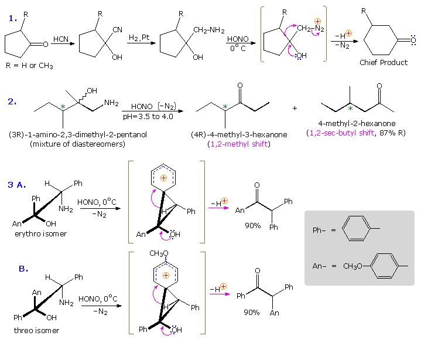
The third example illustrates the importance of substrate configuration on the course of rearrangement. The initial stage of an aryl group shift to an adjacent carbocation site may be viewed as an intramolecular electrophilic substitution of the Friedel-Crafts type. Aryl ring approach from the side opposite to the departing nitrogen of the diazonium ion generates a phenonium ion intermediate (shown in brackets above), the structure of which is similar to a benzenonium ion. In these two examples, diastereomeric reactants lead preferentially to diastereomeric intermediates, even though the anisyl group has a much greater migratory aptitude than phenyl. Electron pair donation by the hydroxyl substituent then acts to open the three-membered ring of these intermediates, yielding the ketone products.
When the solvolysis rates of alkyl halides and sulfonate esters are measured, some curious influences of neighboring substituents are observed. For example, ethyl chloride, neopentyl chloride (2,2-dimethylpropyl chloride) and 2,2,2-triphenylethyl chloride are all 1º-alkyl chlorides, which hydrolyze in wet formic acid to mixtures of alcohols and olefins (SN1 & E1 mechanisms). The reaction rates for ethyl chloride and neopentyl chloride are nearly identical, but the triphenyl compound reacts 60,000 times faster. Equations for the latter two solvolyses are shown in the following diagram. It is apparent that in both cases an initially formed 1º-carbocation has rearranged prior to product formation, as depicted by clicking on the diagram. However, the increased rate of the phenyl substituted compound is perplexing, especially in view of the greater electronegativity of phenyl groups relative to methyl (note that diphenylacetic acid is over nine times more acidic than isobutyric acid). To explain the unexpected reactivity of 2,2,2-triphenylethyl chloride it is proposed that the pi-electrons of a suitably oriented phenyl group assist the 1º-chloride ionization by bond formation from the side opposite the C-Cl bond, as shown by clicking on the diagram a second time. This intramolecular interaction corresponds to the last example in the previous section, and is similar to an intramolecular SN2 reaction. The resulting phenonium ion would immediately open to a 3º-carbocation, in which the assisting phenyl group has shifted to an adjacent position. In this manner a neighboring aromatic ring accelerates the rate-determining (endothermic) ionization step, an influence called anchimeric assistance (Greek: anchi = neighbor).
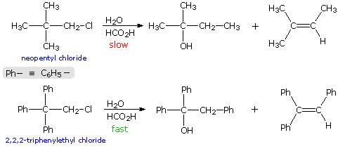
The following energy profiles for these reactions illustrate the sequence of events. Both reactions begin by an initial rate-determining ionization step, the transition state of which is colored pink. The activation energy for this step is larger for neopentyl chloride because it leads to a discrete 1º-carbocation. On the other hand, the ionization of triphenylethyl chloride proceeds with assistance from a neighboring phenyl group, and the resulting phenonium ion immediately opens to a very stable diphenyl 3º-carbocation. The second step in the neopentyl chloride solvolysis is a rapid rearrangement of the 1º-carbocation to an isomeric 3º-carbocation. The transition state for this rearrangement is colored green. In both cases, the 3º-carbocation intermediate finally disproportionates to a mixture of substitution and elimination products. The essential difference is that the ionization transition state for neopentyl chloride suffers all the disadvantages associated with the generation of a 1º-carbocation; whereas, the transition state for ionization of triphenylethyl chloride is lowered in energy by its phenonium-like character.
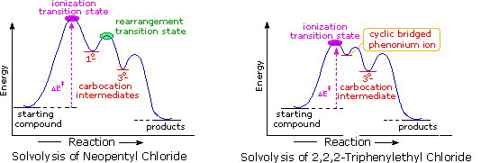
Anchimeric assistance not only manifests itself in enhancement of ionization, but also influences the stereochemical outcome of reactions. The acetolysis of diastereomeric 3-phenyl-2-butanol derivatives provides an example. This alcohol has two chiral centers, and therefore has four stereoisomers in the form of two pairs of enantiomers. The diastereomeric configurations are called erythro and threo, according to their correlation with the tetroses erythrose and threose. As a rule, erythro isomers may assume an eclipsed conformation in which identical or similar substituents on the two stereogenic sites eclipse each other. Threo isomers cannot assume such a conformation. In the following diagram, a tosylate derivative of one enantiomer of each diastereomer is drawn as a Fischer projection. These isomers were solvolyzed in hot acetic acid solution, buffered with sodium acetate, and the configurations of the resulting acetate esters were determined. As expected from a SN1 process, some E1 elimination product was also obtained. Remarkably, each diastereomer is converted to its equivalent diastereomeric acetate (retention of configuration). Furthermore,the erythro compound retains its enantiomeric purity; whereas the threo tosylate gives racemic acetate and is itself racemized during reaction. If an open carbocation intermediate were formed in these reactions, mixtures of erythro and threo acetates would be expected from both tosylates, but only trace amounts of the opposite diastereomer were found among the products.
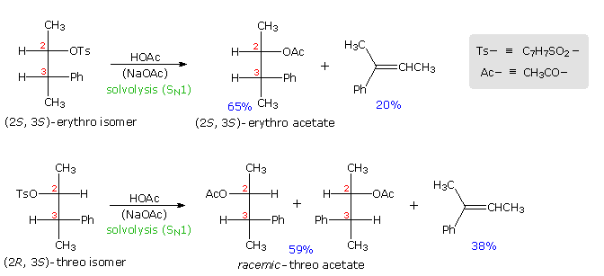
By clicking on the diagram the controlling influence of phenyl group anchimeric assistance will be demonstrated. First, the molecule assumes a conformation in which the phenyl substituent is oriented anti to the tosylate group. Next, a pair of pi-electrons from the benzene ring bonds to C2 as the tosylate anion departs, generating a phenonium intermediate (in brackets). The intermediate from the erythro tosylate is chiral, but that from the threo tosylate is achiral (note the plane of symmetry bisecting the three-membered ring). In each case C2 & C3 are constitutionally equivalent, and nucleophilic attack by acetate anion takes place equally well at either position (green and light blue arrows). As a result of equal rates of product formation by acetate bonding to C2 & C3, the achiral threo intermediate yields a 50:50 (racemic) mixture of threo enantiomers: (2R,3S) from the blue arrows and (2S, 3R) from the green arrows. In contrast, acetate bonding to C2 & C3 of the erythro intermediate produces the same enantiomer of the erythro product (2S,3S). Since the initial ionization to phenonium intermediates is reversible, we are not surprised to find that unreacted erythro tosylate is unchanged; whereas, unreacted threo tosylate is racemized.
The ability of the pi-electrons in a suitably oriented, neighboring benzene ring to facilitate C-X ionization, where X is a halogen or a sulfonate ester, was described in the previous section. Other aromatic rings, such as naphthalene, furan and thiophene, may function in a similar manner, as may the pi-electrons of double and triple bonds. The following diagram shows three examples of neighboring double bond interaction, the first being one of the most striking cases of anchimeric assistance on record. The use of dashed lines to show charge delocalization is a common practice. The text box below the diagram provides additional commentary concerning these examples.
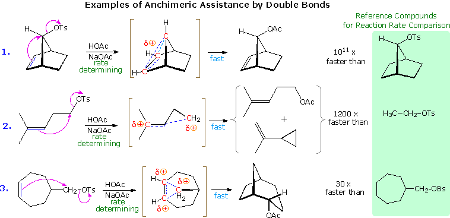
Neighboring Group
Double Bonds
Triple Bonds
Sulfur Atoms
Oxygen Atoms
Nitrogen Atoms
Examples of other neighboring group perturbations, including non-bonding electron pair assistance by neighboring sulfur, oxygen and nitrogen atoms will be displayed above by clicking the appropriate button under the diagram. The text box commentary will change to suit the examples. In most of the cases involving heteroatom assistance, an "onium" intermediate is formed, in which the heteroatom is charged. Adjacent halogen atoms may also stabilize carbocations, as noted earlier with respect to trans-anti additions to cyclic alkenes. Functional rearrangement by way of halonium intermediates has also been reported. For example, a chloroform solution of the diaxial 2-bromo-3-chlorosteroid, shown on the left below, spontaneously rearranges to the more stable diequatorial 2-chloro-3-bromo isomer drawn on the right. The rearrangement is reversible and proceeds by way of the cyclic bromonium ion written in brackets.
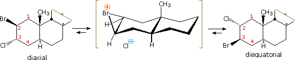
The role of carbocation intermediates in many organic reactions is well established. Some, such as tert-butyl, are localized. Some,such as allyl and benzyl, are stabilized by conjugation to pi-electron systems. Some, as described above, are stabilized by bridging to neighboring nucleophiles. In all cases of anchimeric assistance described above, a charge delocalized or redistributed species is an intermediate on the reaction path. Such intermediates can be isolated in some cases, but they usually have only transitory existence. The rate acceleration of ionization is attributed to structural and energetic similarities of the transition states to the intermediates they produce (the Hammond postulate).
Anchimeric assistance is usually associated with one or more of the following observable characteristics.
• Rate acceleration compared with similar reactions lacking assistance. • Stereoelectronic control that results in rate and product differences between stereoisomers. • Retention of configuration in substitution products. • Racemization of products (and often reactants) when a symmetrical bridged intermediate is involved.
Solvolysis of the exo and endo-2-norbornyl sulfonate esters disclosed differences that suggested anchimeric assistance for the exo-isomer. As shown in the following diagram, the rate of acetolysis of the exo-isomer is substantially faster than that of the endo-isomer, which reacts at a rate similar to the cyclohexyl derivative. The former substitution proceeds with complete retention of configuration and racemization; whereas the endo-isomer is substituted with inversion of configuration and retains a small degree of optical activity. The source of this assistance was proposed to be the electron pair of the C1 : C6 sigma bond, which is ideally oriented anti to the sulfonate leaving group. A sigma-delocalized ion (drawn in brackets), was proposed as an intermediate, displayed by clicking on the diagram. Since this bridged ion is symmetrical, formation of racemic acetate is expected. The term "nonclassical" was applied to this charge delocalized cation, inasmuch as it appeared to be unique. By comparison, the endo-isomer ionizes to a classical 2º-carbocation, which is rapidly converted to the more stable nonclassical ion. Some acetate anion may bond to the 2º-carbocation before it changes, accounting for the residual optical activity in this reaction.
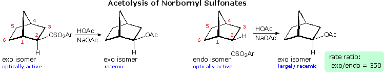
Not everyone was convinced by this interpretation of the evidence. The chief protagonists favoring the nonclassical view were S. Winstein and J. D. Roberts. The primary opposition came from H. C. Brown, who espoused a more conventional rationalization. Brown pointed out that the norbornyl compounds are better compared with cyclopentyl than with cyclohexyl analogs (eclipsing strain), and in such a comparison the endo isomer is abnormally slow, the exo isomer being only 14 times faster than cyclopentyl. The racemic product was explained by assuming the interconversion of enantiomeric classical carbocations was very rapid on the reaction time scale. Brown also noted that attachment of a stabilizing aryl substituent at C2 did not reduce the rate enhancement of exo-ionization or the preference for exo-product formation. Since these latter solvolyses proceed by way of a benzylic cation, sigma-bond assistance was assumed to be minimal. Consequently, rate enhancement and retention of configuration become less significant as nonclassical indicators. This latter experiment, in which the aryl substituent was p-anisyl (An), is depicted on the left side of the diagram below.
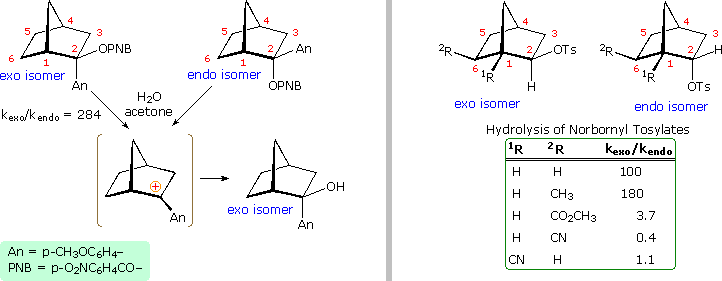
Despite Brown's damaging arguments, other experiments provided additional support for the nonclassical view. As shown on the right side of the diagram, electron withdrawing substituents on C6 (2R) retarded exo-reactivity more severely than endo-reactivity. A similar effect was noted for such substituents at C1 (1R). This influence is best explained by the nonclassical hypothesis, in which partial positive charge must be carried by C1, C2 & C6.
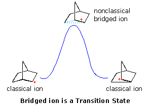
Interpretations of the considerable body of evidence amassed at this point may be summarized in the diagram on the right. In the first display, the nonclassical bridged cation is shown as a transition state for the interconversion of the classical carbocations. A relationship of this kind corresponds to the rearrangement of neopentyl chloride. A second possibility, presented by clicking on the diagram, has the nonclassical ion as a higher energy intermediate, linking the classical ions. Finally, by clicking on the diagram a second time, the possibility that the nonclassical ion represents the more stable intermediate is drawn. By the mid 1960's chemical and nmr techniques had improved to a stage that allowed direct observation of carbocations in low nucleophilic, acidic solutions, often referred to as "super acids". Much of this work was conducted by George Olah (Nobel Prize, 1994), using mixed solvents composed of SbF5, SO2, SO2F2 & SO2FCl. At low temperatures, 1H and 13C nmr spectra of (CH3)3C(+) and (CH3)2CH(+) were obtained and interpreted. As anticipated, the charged tricoordinate carbon atom exhibited a 13C signal over 300ppm downfield from TMS. When similar nmr measurements were applied to the 2-norbornyl cation, a number of fast proton shifts were disclosed. These could be "frozen out" by working at low temperature, the 3,2-shift at -70º C and a faster 6,2-shift at -130º C. The resulting spectrum, which remained unchanged at temperatures as low as -160º C, had no low field signals near that expected for a classical 2º-carbocation, and was supportive of the nonclassical structure. Recently, a solid state 13C nmr spectra at 5º K proved consistent with the nonclassical ion. From these and other spectroscopic studies, the sigma-bridged nonclassical cation has been firmly identified as the more stable carbocation species having the 2-norbornyl structure. Further confirmation was provided in 2013 by researchers in Germany, employing careful X-ray crystallographic measurements of an annealed [C7H11]+[Al2Br7]– salt at 40º K. Are there other relatively stable nonclassical carbocations? Several that seem to fit this classification have been identified, but few have been as exhaustively studied as the 2-norbornyl. One of the best criteria for evaluating candidate ions is to establish whether one or more of the participating carbon atoms is hypervalent (has more than four coordinating groups). In the following diagram, the simplest hypervalent carbocation, methanonium, is drawn on the left in the gray shaded box. This ion is commonly seen in the mass spectrum of methane (gas phase), but decomposes in solution as a consequence of its extreme acidity. To its right are two larger non-classical ions, 2-norbornyl and 7-norbornenyl. A pentacoordinate carbon atom is identified in each case. Resonance contributors to these ions are shown to the right of the dashed bond representation, and in all the drawings the delocalized electron pair is colored blue. Finally, a broad overview of this classification, offered by Olah in his Nobel lecture, will be displayed by clicking on the diagram.
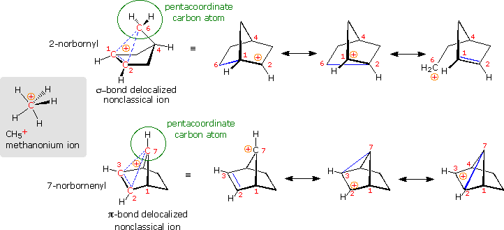
To see a model of the 2-norbornyl cation .
Protonation of the divalent oxygen atom of alcohols and ethers by strong acids produces a tricoordinate oxonium cation. Because the oxygen of an oxonium ion has a valence shell octet, it does not constitute an electron deficient site and cannot serve as a rearrangement terminus. To induce rearrangement in the same manner as a tricoordinate carbocation, oxygen must be converted to a unicoordinate oxacation, as noted in the following diagram. A 1,2-alkyl or aryl shift then transforms a relatively unstable oxacation into a more stable carbocation.
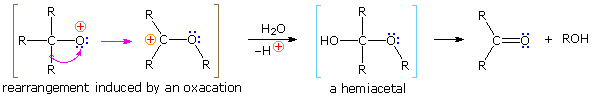
The simplest precursor of an oxa cation is a peroxide or equivalent derivative (e.g. R-O-OH or R-O-X). Removal of hydroxide anion from a hydroperoxide is energetically unfavorable, unless it is initially converted to a better leaving group in a manner similar to that used to facilitate substitution reactions of alcohols. By protonating the hydroxyl group, the leaving group becomes water, thus generating an oxacation. A useful industrial procedure for preparing phenol (and acetone) is based on this strategy.
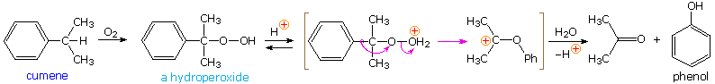
The acid-catalyzed reaction of ketones with hydroperoxide derivatives is known as the Baeyer-Villiger reaction. A general equation illustrating this oxidation reaction is shown below, and it may be noted that the rearrangement step is similar to that of a pinacol rearrangement. Esters or lactones are the chief products from ketone reactants. In this equation a discrete oxacation is drawn as an intermediate, but it is more likely that the rearrangement is concerted, as will be shown by clicking on the equation. Once the peracid has added to the carbonyl group, the rearrangement may be facilitated by an intramolecular hydrogen bond, in the manner depicted in brackets on the right. The migratory aptitude of various substituent groups (e.g. 1R & 2R) is generally: 3º-alkyl > 2º-alkyl ~ benzyl ~ phenyl > 1º-alkyl > methyl. Stereoelectronic factors favor an anti-periplanar orientation of the migrating group to the leaving moiety, and will control the rearrangement in some cases. An example will be displayed below on clicking the display a second time. Peracid exchange with peracetic acid leads to an intramolecular Baeyer-Villiger reaction by way of the bicyclic acylperoxide drawn in brackets. Here stereoelectronics favor migration of the less substituted α-carbon. The lactone product was identified by esterification and ester exchange with methanol to give methyl 2-carbomethoxy-7-hydroxyheptanoate. Aldehydes are usually oxidized to carboxylic acids under the conditions used for the Baeyer-Villiger reaction.
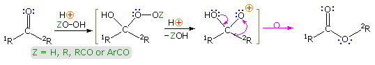
Although hydrogen peroxide itself may be used in the Bayer-Villiger reaction, it may add at both ends to reactive carbonyl groups, producing cyclic dimeric, trimeric and higher addition compounds. Consequently, derivatives such as peracids (Z = RCO & ArCO above) are the preferred reagents for this reaction. Among the most common peracids used in this respect are: peracetic acid, perbenzoic acid & meta-chloroperbenzoic acid (MCPBA). Four examples of this oxidative rearrangement are given in the following diagram. In most of these examples the migrating group retains its configuration in the course of the rearrangement, as expected for a concerted process. In example #3 it is interesting that migration of the bridgehead 3º-alkyl group is preferred over a possible phenyl shift.
Since many simple nitrogen compounds are bases, they form "onium" cations when protonated. Two such cations are shown on the left (in the blue box) below. Because ammonium and iminium cations have a nitrogen valence shell electron octet, such a nitrogen atom cannot serve as a site for nucleophile bonding or a migration terminus. For a nitrogen cation to initiate rearrangement it must have an unfilled valence shell, and two such azacations are shown in the center of the diagram (pink box). An electron deficient nitrogen atom does not have to be a cation, as the nitrene example on the right (green box) demonstrates.
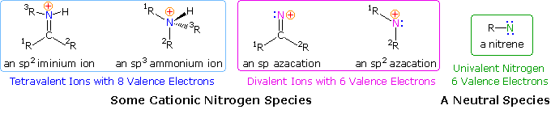
If the hydroxyl group of a ketoxime is removed by the action of strong acid or phosphorous pentachloride, followed by hydrolysis, an amide is formed. Complete removal of the derivatized hydroxyl group and its bonding electron pair would generate a divalent sp-hybridized azacation of the type depicted in the previous diagram. Were this to occur, both carbon substituents (1R & 2R) would be candidates for the subsequent 1,2-shift. In practice, however, it is always the group anti to the departing OH that migrates to nitrogen. This stereospecificity indicates that the 1,2-shift is concerted with N-O cleavage, as shown below. The resulting N-alkylated nitrilium intermediate will react with nucleophiles (e.g. water) at the electrophilic carbon atom adjacent to the "onium" nitrogen. Note that the structure drawn for this intermediate is the more favored of two resonance contributors, inasmuch as all heavy atoms have filled valence shell octets. Bonding of a nucleophile to the nitrogen atom would require expanding its valence shell to include ten electrons, or formation of an unstable dipolar species. The initial product from hydration at carbon is an iminol, which immediately tautomerizes to the more stable amide. Reactions with PCl5 probably give an iminochloride, and this in turn is hydrolyzed to the same amide.
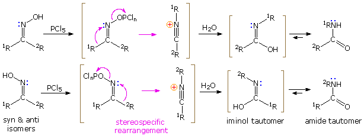
The first example in the following group of reactions is a typical Beckmann rearrangement. The oxime from cyclohexanone has identical carbonyl substituents. and therefore exists as a single isomer. The product of the rearrangement is a lactam (a cyclic amide), which can be hydrolyzed to an omega-amino acid. This lactam serves as an important industrial precursor to nylon 6. The second example involves an oxime derivative with different carbonyl substituents, which exists as a pair of stereoisomers (syn & anti). The anti isomer rearranges by a 1,2-phenyl shift, whereas the syn isomer undergoes a 1,2-isopropyl shift. The former reaction is much faster than the latter, presumably because it proceeds by way of a relatively stable phenonium ion intermediate (structure in shaded box). Note that the picrate leaving group (2,4,6-trinitrophenolate) is a stable anion. Example #3 is another case that demonstrates the stereospecificity of the Beckmann rearrangement. The 1,2-shift of the ortho-phenol substituent is faster than that of the unsubstituted phenyl group, and the hydroxyl is ideally located to bond to the electrophilic carbon of the intermediate. Consequently, the product from the anti isomer is a benzoxazole heterocycle.
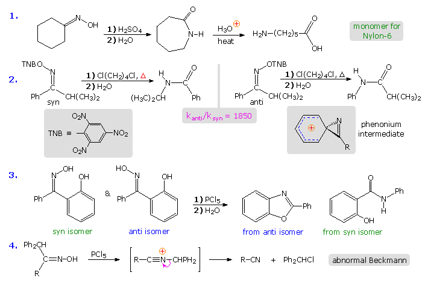
The fourth example above shows an unusual divergence in behavior that sometimes occurs when the migrating substituent fragments from the intermediate, leaving a nitrile as a stable product. This has been called an abnormal Beckmann reaction.
The rigid configuration of the phenonium cation shown above imposes a structural constraint that is nicely demonstrated by the rates of rearrangement of some fused ring bicyclic compounds. Clicking on the diagram will show the results of such a study. Oxime derivatives of phenyl ketones incorporated in six, seven and eight-membered fused rings were studied. Because of the carbon chain joining the oxime function to the ortho-carbon of the benzene ring, the phenonium ion that normally facilitates phenyl migration may be unable to assume its preferred structure (three-membered ring orthogonal to the phenyl ring). The three-carbon bridging chain for n = 6 is such a case, and rearrangement of the anti isomer is very slow. As the length of the bridging chain increases, its constraint is less severe, and the rate of rearrangement increases. The eight-membered oxime picrate hydrolyzes rapidly, producing a nine-membered lactam in high yield.
R2C=N-NH2 + HNO2 RCONHR + N2
Beckmann type rearrangements may also be carried out by treating hydrazones with nitrous acid, as shown on the right. As a rule, this is a less desirable procedure because pure hydrazones are more difficult to acquire, and the yield of pure product is inferior. A direct rearrangement of ketones, thereby avoiding the necessity of preparing an derivative, is possible by a procedure known as the Schmidt rearrangement. Acid-catalyzed addition of hydrazoic acid to the carbonyl group of a ketone creates an unstable azidocarbinol that, on dehydration, produces the same triazonium cation presumably formed as an intermediate in the nitrous acid deamination of a hydrazone. Rearrangement of this species by rapid nitrogen loss then initiates a Beckmann-like rearrangement. By clicking the upper diagram a second time, two examples of the Schmidt rearrangement will be presented.
Examples of rearrangements to sp2 hybridized azacations are relatively rare compared with their carbon analogs. The starting materials for generating such azacations are usually chloramines or hydroxyl amines. Four examples of these transformations, sometimes called "Stieglitz rearrangements", are shown below. The first example is similar to a Wagner-Meerwein rearrangement, and the second to a pinacol rearrangement. Competitive shifts of para-substituted phenyl groups in reactions similar to example #3, demonstrate that a methoxy substituent facilitates rearrangement, whereas a nitro substituent retards it. In the last example, a conjugated azacation activates the benzene ring to nucleophilic substitution, in contrast to the usual role played by amine substituents.
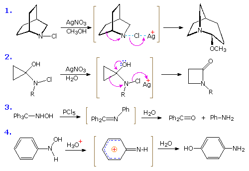
Several useful and general procedures for degrading carboxylic acid derivatives to amines all involve the rearrangement of an acyl nitrene to an isocyanate. Although the nitrogen atom of a nitrene has no formal charge, it is electron deficient and serves as a locus for 1,2-rearrangements. As illustrated in the following diagram, acyl nitrenes may be generated from different amide-like starting compounds. Once formed, acyl nitrenes quickly rearrange to relatively stable isocyanate isomers, which may be isolated or reacted with hydroxylic solvents. The most common application of this rearrangement is for the synthesis of amines. Thus, addition of water to the ketene-like isocyanates produces an unstable carbamic acid that decomposes to an amine and carbon dioxide. General procedures for obtaining the nitrene precursors are listed below the diagram.
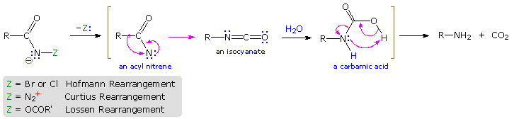
Hofmann Route: Primary amides are converted to N-halogenated derivatives by the action of HOX or X2 in alkaline solution. Excess base generates a conjugate base of the product. Lossen Route: A hydroxamic acid derivative (RCONHOH) is made by reacting an ester with hydroxyl amine. The hydroxamic acid is O-acylated and then converted to its conjugate base. Curtius Route: An acyl azide (RCON3) is prepared in one of two ways. (i) Reaction of an acyl chloride with sodium azide, or (ii) Reaction of an ester with excess hydrazine, followed by reaction of the acylhydrazide product (RCONHNH2) with cold nitrous acid. Acyl azides decompose to isocyanates on heating. Schmidt Route: A variant of the Curtius procedure in which a carboxylic acid is heated with hydrazoic acid (HN3) and an acid catalyst.
Some examples of these different rearrangements are shown in the following diagram. In each case a green capitol letter (C, H, L or S) designates the type of reaction. The first three reactions illustrate the Hofmann rearrangement, which is a particularly useful method for preparing amines. The last example shows a Curtius reaction applied to a diester by way of an intermediate bis-acylhydrazide. An alternative Curtius approach to the amine product of example # 2 is also shown. The Curtius procedure is particularly useful if the isocyanate is the desired product, since the decomposition of the acyl azide intermediate can be conducted in the absence of hydroxylic solvents that would react with the isocyanate.
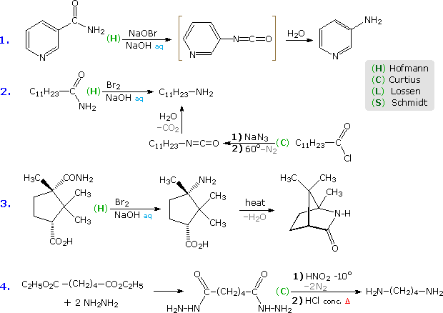
Five more examples will be displayed above by clicking on the diagram. Example # 5 shows a Schmidt reaction in which an optically active carboxylic acid is the substrate. The S-configuration of the migrating phenethyl group is retained in the amine product, confirming the intramolecular character of these rearrangements. Retention of configuration is also observed in Curtius, Lossen and Hofmann rearrangements of this kind. Reactions # 6 & # 7 are interesting cases in which water is absent during the formation and reaction of the isocyanate. The alcohol solvent in # 6 adds to the isocyanate to produce a carbamate ester, known as a urethane. Unlike the unstable carbamic acids, urethanes do not decompose and may be isolated as pure compounds. If water had been the solvent, the resulting 1º-enamine would have rearranged to an imine and hydrolyzed to an aldehyde. In the Lossen rearrangement (# 7) butyl amine adds to the isocyanate to give a substituted urea (urea is NH2CONH2). The Hofmann rearrangement in reaction # 8 provides a novel example of the tautomerism of an acetylenic 1º-amine to a nitrile. Finally, the last example illustrates a selective Hofmann rearrangement of a bromo-imide. The reactivity of the carbonyl group para to the electron withdrawing nitro substituent is increased relative to the other imide carbonyl. Consequently, base-catalyzed hydrolysis takes place there preferentially, leaving the acyl nitrene moiety meta to the nitro function.
The rearrangement of acyl nitrenes to isocyanates that is the crux of the Hofmann, Curtius and Lossen rearrangements, is paralleled by the rearrangement of acyl carbenes to ketenes, a transformation called the Wolff rearrangement. This rearrangement is a critical step in the Arndt-Eistert procedure for elongating a carboxylic acid by a single methylene unit, as described in the diagram below. The starting acid, written on the left, is converted first to an acyl chloride derivative, and then to a diazomethyl ketone. Diazomethane has a nucleophilic methylene group, as indicated by the resonance formulas drawn in the shaded box. Acylation of the methylene carbon produces an equilibrium mixture of a diazonium species and the diazomethyl ketone plus hydrogen chloride (written in brackets). If the HCl is not neutralized by a base, this mixture reacts further to give a chloromethyl ketone with loss of nitrogen. However, if the HCl is neutralized as it is formed, the relatively stable diazo ketone is obtained and may be used in subsequent reactions. Since diazomethane itself may function as a base, the course of a given reaction is established by the manner in which the reactants are combined. When an ether solution of diazomethane is slowly added to a warm solution of the acid chloride, nitrogen evolution is observed and the chloromethyl ketone is the chief product. One equivalent of diazomethane is required for this reaction. If the addition is reversed, so that a cold solution of the acid chloride is added slowly to an excess of diazomethane in cold ether solution, nitrogen evolution is again observed; but two equivalents of diazomethane are consumed. The products are the diazo ketone and methyl chloride (a gas) from the reaction of diazomethane with HCl..
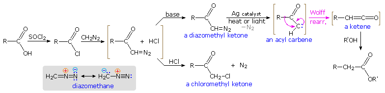
To carry out the Arndt-Eistert reaction the diazo ketone is decomposed in the presence of a silver catalyst (usually AgO2 or AgNO3 ) together with heat or light energy. The resulting Wolff rearrangement generates a ketene, which quickly reacts with any hydroxylic or amine reactants that may be present in solution. The general equations on the left below illustrate that the end product from the Arndt-Eistert reaction may be a carboxylic acid, an ester or an amide.
RCH=C=O +
H2O RCH2CO2H
R'OH RCH2CO2R'
NH3 RCH2CONH2
R'NH2 RCH2CONHR'
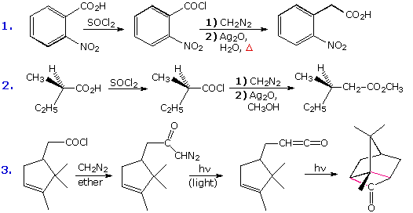
Three specific examples of this procedure are presented to the right of the general equations. The first two examples are typical Arndt-Eistert reactions. Tolerance for other functional groups, such as nitro, is demonstrated by the first case; and the second example shows that the configuration of the migrating group is retained in the rearrangement. Other ketene reactions, such as a [2 + 2] cycloaddition, may take place in the absence of hydroxylic solvents or amines. Reaction #3 is an example of such an alternative reaction. The new bonds in the cycloadduct are colored pink.
The Arndt-Eistert reaction is a special case of a more general class of diazo ketone reactions. If we assume that diazo ketones normally decompose to acyl carbenes, then numerous subsequent reactions can be imagined, and many have been realized. The following diagram outlines some of these transformations, originating from the diazo ketone formula in the center of the diagram. Molecular nitrogen is lost in each case, and the Wolff rearrangement path is on the left. Most of the other reactions reflect the ability of carbenes to insert into sigma bonds or add to double bonds. Metal catalysts are sometimes used to facilitate certain reactions, and may associate with carbenes to generate carbenoid intermediates. By clicking on the diagram some examples of these diazoketone reactions will be shown.
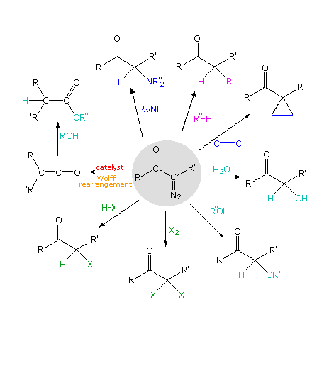
Some problems involving molecular rearrangements are provided here.
Return to Table of Contents
This page is the property of The Edvibe Team. Comments, questions and errors should be sent to contact@edvibe.co.ke. These pages are provided to the IOCD to assist in capacity building in chemical education. 05/05/2013